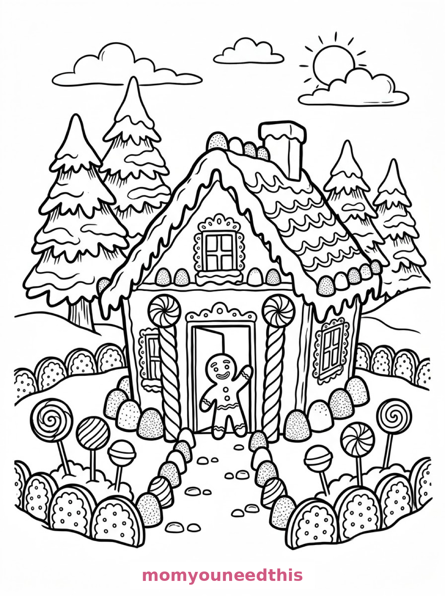
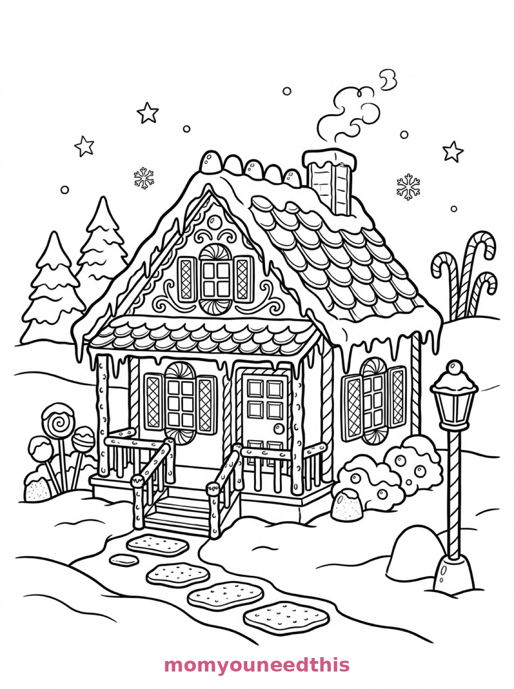
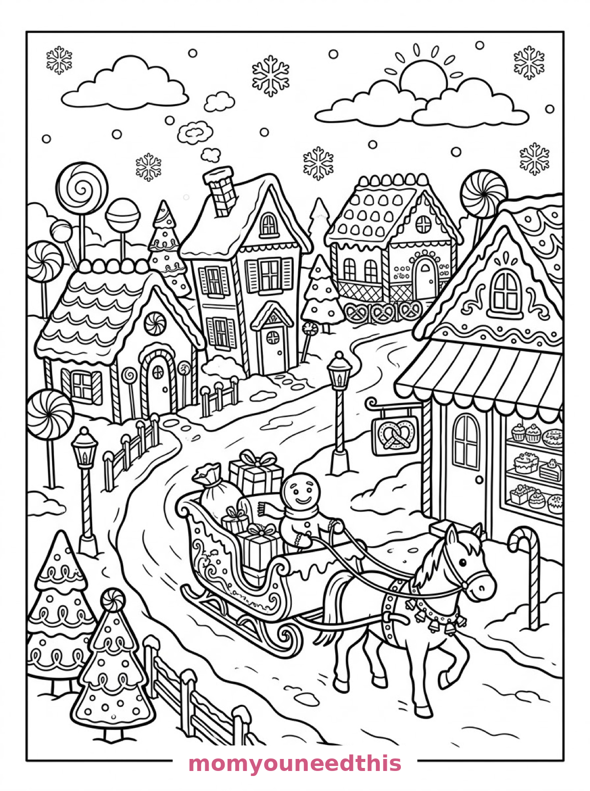

Free Gingerbread House Coloring Pages Candy House, Pretzel Cottage & Village Street Printables
These free gingerbread house coloring pages build a whole sweet street — a candy house with a lollipop garden, a cottage with a pretzel-log porch, and a village of three houses with a bakery. Download the set below, print at home on letter-size paper, and let the coloring fun begin. No signup needed.
Last updated: October 23, 2026
Quick Answer
Yes — this page has three free printable gingerbread house coloring pages: a gingerbread house with icing roof edges and a cookie fence, a storybook cottage with a pretzel-log porch and chocolate-bar door, and a whole gingerbread village street with a bakery and a horse-drawn sleigh. Bold outlines and big spaces, made for little hands. Download, print on letter-size paper, and hand over the crayons — no signup, no cost.
At a Glance
- Ages: 3–8
- Pages: 3 free printables
- Format: Print at home, letter size
- Cost: Free, no signup
- Supplies: Crayons or markers
- Time: 10–20 minutes
🏠 Gingerbread House with a Candy Garden Coloring Page

🎨 Download Your Free Candy House Coloring Page
A gingerbread house with icing along its roof edges, candy-cane pillars by the door, gumdrop bushes, a lollipop garden and a cookie fence, with snowy pine trees behind and a gingerbread figure waving from the doorway — bold outlines, big spaces, zero signup.
⬇️ Download Free Candy House Page 🖨️ Print Candy House Page🎁 Free printable for preschoolers & kids
🥨 Gingerbread Cottage with a Pretzel Porch Coloring Page

🎨 Download Your Free Pretzel Cottage Coloring Page
A gingerbread house shaped like a storybook cottage with a pretzel-log porch, wafer shutters, peppermint window frames and a chocolate-bar door, set in a snowy clearing with a candy lamppost and a path of wafer stepping stones — bold outlines, big spaces, zero signup.
⬇️ Download Free Pretzel Cottage Page 🖨️ Print Pretzel Cottage Page🎁 Free printable for preschoolers & kids
🛷 Gingerbread Village Street Coloring Page

🎨 Download Your Free Gingerbread Village Coloring Page
A whole gingerbread village street with three different gingerbread houses, a gingerbread bakery with a striped awning, candy trees, and a horse-drawn sleigh carrying parcels down the snowy lane — bold outlines, big spaces, zero signup.
⬇️ Download Free Gingerbread Village Page 🖨️ Print Gingerbread Village Page🎁 Free printable for preschoolers & kids
More Coloring Pages
Tap any picture to open its theme page and download the free printable.


🍪 How To Use This Page
- Browse the three designs and pick the gingerbread house your child will love most.
- Tap download or print under that design — the file opens full-size, ready for letter-size paper.
- Print a couple of copies of the village street — three houses means three color schemes.
- Color together with crayons or markers and leave some icing white.
🏠 Why Kids Love Gingerbread House Coloring Pages
A gingerbread house is a house you build with candy — and coloring one is decorating without the sticky fingers. Every element is a treat with a job: candy canes hold up the porch, gumdrops are the bushes, the fence is made of cookies. Kids get to be architects and pastry chefs on the same page.
These designs also reward the decorator's eye. Icing stays white, candy goes bright, and the gingerbread itself is one warm brown — a simple recipe that makes even a first attempt look like a Christmas card. And because every house on the page is made of treats, there is no wrong choice anywhere on it — a green roof is peppermint, a blue door is blueberry, a purple fence is grape candy, and a pink chimney is simply strawberry icing doing its job as building material for the sweetest street in town.
🍬 Meet the Three Gingerbread Scenes on This Page
The candy house. A gingerbread house with icing along its roof edges, candy-cane pillars by the door, gumdrop bushes, a lollipop garden and a cookie fence, with snowy pine trees behind and a gingerbread figure waving from the doorway. It is the classic page in the set — every candy in the garden is its own small coloring job.
The pretzel cottage. A gingerbread house shaped like a storybook cottage with a pretzel-log porch, wafer shutters, peppermint window frames and a chocolate-bar door, set in a snowy clearing with a candy lamppost and a path of wafer stepping stones. It is the coziest page in the set, and the pretzel logs are a lovely pattern to fill.
The village street. A whole gingerbread village street with three different gingerbread houses, a gingerbread bakery with a striped awning, candy trees, and a horse-drawn sleigh carrying parcels down the snowy lane. It is the biggest page in the set — three houses to decorate differently, plus a bakery and a sleigh.
✏️ Gingerbread House Coloring Tips
- Leave the icing white. White icing against colored candy and brown gingerbread is exactly how the real thing looks — and it makes the candy pop.
- Give every gumdrop a different color. The bushes are gumdrops: rainbow bushes are the rule, not the exception.
- Stripe the candy canes. Red-and-white stripes on the pillars and lamppost are the classic gingerbread detail — slow, satisfying coloring.
- Color the three village houses differently. Matching houses are fine; a pink one, a mint one and a chocolate one are better.
🍪 Coloring Pages for Different Ages
For ages 3 to 4, start with the candy house. One house, big candy shapes and a waving gingerbread friend are all a little colorer needs.
For ages 5 to 6, the pretzel cottage is the sweet spot. The house is still one bold shape, but the porch, the shutters and the lamppost add a real decorating project.
For ages 7 to 8, hand over the village street. Three houses, a bakery, candy trees and a sleigh reward patience — and the finished street looks like a holiday card.
🏠 More Gingerbread Fun After Coloring
Plan a real decorating session: after coloring, let your child sketch their “dream house” version on the back — which candies would they add? The coloring page becomes the blueprint for December's actual gingerbread house.
For more edible architecture, the candy coloring pages include their own gingerbread house in a forest clearing — a different design from these three. And the Christmas coloring pages complete the holiday set.
🔗 More Free Printables You’ll Love
- Free Candy Coloring Pages A candy shop, a sweet still life and a gingerbread house to color.
- Free Christmas Coloring Pages Trees, ornaments and Santa scenes to print and color.
- Free House Coloring Pages Houses to print and color, with bold outlines and big spaces.
- All Free Coloring Pages Browse every free coloring page on the site, organized by theme.
❓ Gingerbread House Coloring Pages FAQ
Are these gingerbread house coloring pages really free?
Yes — all three designs on this page are free original printables from MomYouNeedThis. Download them, print them at home, and color — no signup and no cost.
What ages are these coloring pages best for?
Kids ages 3 to 8 get the most from this set. The candy house is the gentlest start for younger children, while the pretzel cottage and village street have the detail older kids enjoy.
How do I print a coloring page?
Tap the download button under the design you want, then print the file on regular letter-size paper. The print button opens the full-size page in a new tab if you prefer to print from there.
Is the gingerbread house on the candy coloring pages the same house?
No — the candy coloring pages have their own gingerbread house, set in a forest clearing with a peppermint path and lollipop trees. The three houses on this page — the candy house, the pretzel cottage and the village street — are different designs.
Can I make a gingerbread coloring book from these pages?
Yes — print all three designs, stack them in order, and staple along the left edge. Add a cover sheet with your child's name for a finished homemade gingerbread house coloring book.